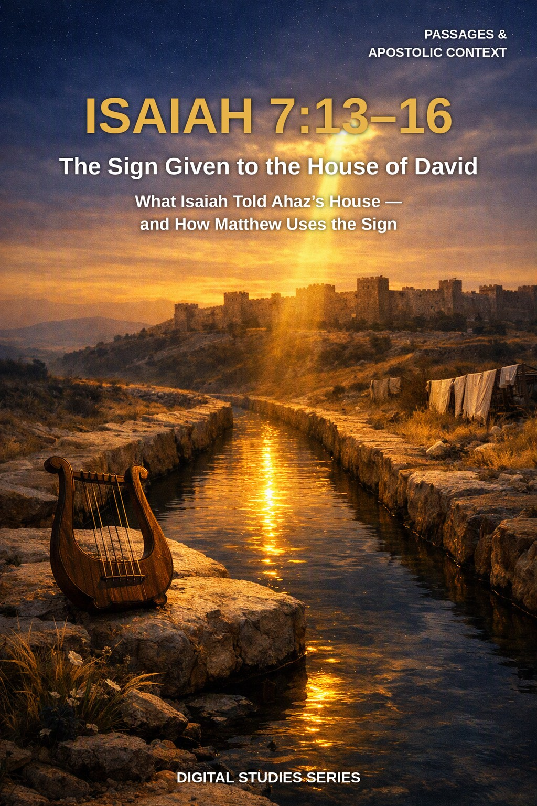
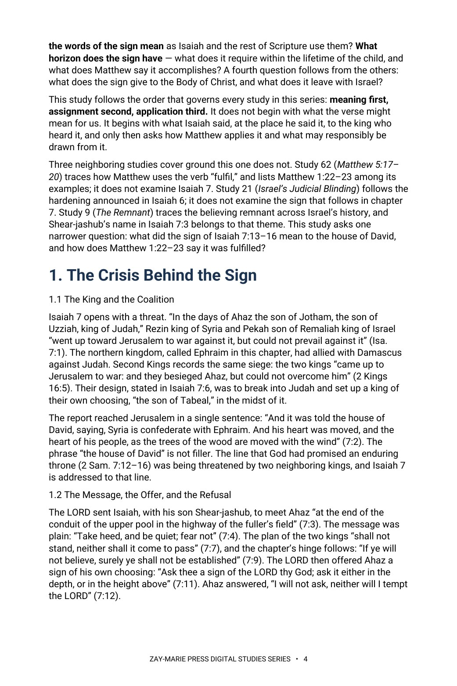

Isaiah 7:13–16
The Sign Given to the House of David
What did Isaiah tell the house of David — and how does Matthew say the sign was fulfilled?
Isaiah 7:14 is quoted at Christmas and disputed the rest of the year. Readers hear a birth announcement, or a verse about a young woman in the eighth century BC, and rarely ask what a frightened king of Judah had just refused.
This study begins where Isaiah does: at the conduit of the upper pool, with Ahaz, Rezin, and Pekah. It weighs the words of the sign, measures its clock against 2 Kings, follows the name Immanuel through Isaiah 8–11, and only then reads Matthew 1:22–23, holding to one order throughout: meaning first, assignment second, application third.
Read the Sign in Order: Meaning, Assignment, Application
You will read Isaiah 7:13–16 as Isaiah gave it: to the house of David, in the reign of Ahaz, after the king had declined a sign of his own choosing. You will examine the words of the sign one at a time, weigh the Hebrew and Greek evidence for each, and measure the time markers of verses 15 and 16 against the history recorded in 2 Kings and Isaiah 8. You will test proposed identities for the child against the text and the chronology, follow the name Immanuel and the house of David through the chapters that follow, and set Matthew 1 and Luke 1 beside the prophecy before drawing any application.
Readers who already own Study 62 (Matthew 5:17–20), Study 21 (Israel’s Judicial Blinding), or Study 9 (The Remnant) will recognize adjoining ground. Study 62 traces how Matthew uses the verb “fulfil” and lists Matthew 1:22–23 among its examples; this study does not repeat that survey, but examines the Isaiah passage that Matthew quotes. Study 21 follows the hardening announced in Isaiah 6, the chapter just before this one; this study begins at the sign that follows and does not re-derive the hardening. Study 9 traces the believing remnant across Israel’s history, and Shear-jashub’s name in Isaiah 7:3 belongs to that theme; this study meets him only as context for the scene. The question this study alone answers: what did the sign of Isaiah 7:13–16 mean to the house of David, and how does Matthew 1:22–23 say it was fulfilled?
How These Studies Relate
Study 63 works a single prophecy from Isaiah. The studies below supply the neighboring surveys it deliberately does not repeat.
Digital Studies
Study 62 — Matthew 5:17–20 Follow how Matthew uses “fulfil” across his Gospel; Study 63 examines the Isaiah passage behind one of those uses.
Study 21 — Israel’s Judicial Blinding Trace the hardening announced in Isaiah 6; Study 63 begins with the sign given in the next chapter.
Study 9 — The Remnant Follow Israel’s believing remnant through its history; Study 63 meets Shear-jashub only as part of the scene at the upper pool.
Commentary Series
Covenantal Commentary Series, Volume 5 — The Davidic Covenant Reads the promise God swore to David, the throne and the kingdom, and answers modern writers; Study 63 reads Isaiah 7:13–16 in Ahaz’s crisis and Matthew’s use, recording what the text says of the house of David.
Trace the Sign Before You Conclude
Setting and Audience
Read Isaiah 7:13–16 in its own setting by tracing the crisis, the king, and the audience named in Isaiah 7:1–12 before interpreting a single phrase of the sign.
The Words of the Sign
Weigh the key terms of verse 14 — “the virgin,” “shall conceive,” and “Immanuel” — by following each word through its other uses in Genesis, Judges, Isaiah 8, and Matthew 1.
The Clock of Verses 15–16
Measure the time markers of verses 15 and 16 against the history recorded in Isaiah 8:1–4, 2 Kings 15:29–30, and 2 Kings 16:5–9.
The Child in Ahaz’s Day
Test proposed identities for the child by asking, of each proposal, what the text requires and what the chronology of 2 Kings 16 and 18 allows.
Immanuel and the Throne
Follow the name Immanuel and the house of David through Isaiah 8:8–10, 9:6–7, and 11:1–5, and set Matthew 1:18–25 and Luke 1:26–35 beside the prophecy.
Testing Four Readings
Apply a repeatable discipline for testing four common readings of the sign, and for receiving what belongs to Israel’s prophecy without transferring its assignment.
Read the Word in Its Context
Isaiah 7:1–12
The siege, the king, the message at the upper pool, and the offer Ahaz declines.
Isaiah 7:13–16
The passage itself: the address to David’s house, the four elements of the sign, and the clock of verses 15–16.
2 Kings 16:5–9
The record of the same siege, Ahaz’s appeal to Assyria, and the fall of Damascus.
Isaiah 8:1–4
A second child, a second name, and a timeframe that parallels the sign’s clock.
Isaiah 8:8–10
The name Immanuel addressed to the land, and “God is with us” declared against the nations.
Isaiah 9:6–7
A child born and a son given, and a government upon the throne of David.
Matthew 1:18–25
Joseph, the angel’s word, and Matthew’s statement that all this was done that it might be fulfilled.
Luke 1:26–35
Gabriel’s announcement to Mary, the house of David, and her question about how it shall be.
Setting Before Sign
A sign is given to someone, in a situation, for a purpose.
Isaiah 7:14 is settled from the king, the threat, and the refusal in verses 1–12 before any word of the sign is pressed into service.
Preview the Study Before You Purchase
Click any page to enlarge it for reading.



The Crisis Behind the Sign
Read the king, the coalition, and the refusal before the sign itself.
A Focused Study of Isaiah’s Sign to David’s House
17-Page Digital PDF
Approved cover and 16-page numbered interior.
9 Teaching Sections
A text-driven study from the crisis of Ahaz’s day to careful application.
Callout Boxes
Five callout boxes marking the study’s key working rules.
Comparison Tables
Setting markers, the seven uses of almah, the fall of the two kings, proposals for the child, and Matthew set beside Isaiah.
Scripture-Tracing Exercise
Six guided traces through the passages the study relies on.
Guided Further Study
Five passage groups for deeper reading.
Review Questions
Eleven questions testing the study’s markers and method.
Final Synthesis Exercise
A written synthesis drawing the whole study together.
Isaiah 7:13–16
17-page digital PDF · For personal use